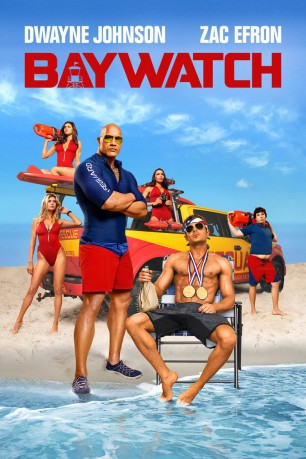

#7157 Baywatch
 gesehen am 12.10.2017
gesehen am 12.10.2017
 
 IMDB-Wertung: 5.6 / 10
IMDB-Wertung: 5.6 / 10  Tomatometer: 17
Tomatometer: 17  Metascore: 37
Metascore: 37 
Mitch Buchannon hat als charismatischer Anführer eines Teams von Rettungsschwimmern alle Hände voll zu tun. Vor allem ein Neuzugang bereitet ihm Sorgen: Matt Brody war einst olympischer Schwimmer, doch wurde nach einem Aufsehen erregenden Zwischenfall verbannt. Nun muss ihn Mitch als PR-Maßnahme in sein Team aufnehmen. Der Neuzugang stellt gleich mal Mitchs Autorität in Frage. Summer hat dagegen ein Auge auf den Neuankömmling geworfen. Allgemein stehen Liebe und Beziehung dem Team immer im Weg. Mitchs Ex Stephanie ist geschäftlich noch weiter seine Partnerin, doch als er sich neu verliebt, reagiert sie eifersüchtig. Und der trottelige Ronnie versucht verzweifelt, bei Sexbombe C.J. zu landen. All das muss aber bald beiseite gewischt werden, denn als Mitch und Matt einer kriminellen Verschwörung auf die Spur kommen, die ihren Strand bedroht, müssen sie alle zusammenarbeiten...
Jahr: 2017
Dauer: 121 Minuten
FSK: 12
Land: USA Studio: Paramount PicturesTonspuren: DD5.1 - ,
Untertitel: Deutsch, Englisch,
Auflösung: 1080p (1920x808) Größe: 5488 MB
Genre: Action, Komödie, Krimi
Regisseur: Seth Gordon
Drehbuch: Michael Berk
Soundtrack:
Darsteller:
 Dwayne Johnson als Mitch Buchannon
Dwayne Johnson als Mitch Buchannon Zac Efron als Matt Brody
Zac Efron als Matt Brody Priyanka Chopra als Victoria Leeds
Priyanka Chopra als Victoria Leeds Alexandra Daddario als Summer Quinn
Alexandra Daddario als Summer Quinn- Kelly Rohrbach als CJ Parker
- Ilfenesh Hadera als Stephanie Holden
 Jon Bass als Ronnie Greenbaum
Jon Bass als Ronnie Greenbaum Yahya Abdul-Mateen II als Sgt. Ellerbee
Yahya Abdul-Mateen II als Sgt. Ellerbee Hannibal Buress als Dave the Tech
Hannibal Buress als Dave the Tech Rob Huebel als Captain Thorpe
Rob Huebel als Captain Thorpe Amin Joseph als Frankie
Amin Joseph als Frankie Jack Kesy als Leon
Jack Kesy als Leon Oscar Nuñez als Councilman Rodriguez
Oscar Nuñez als Councilman Rodriguez David Hasselhoff als The Mentor
David Hasselhoff als The Mentor Pamela Anderson als Casey Jean Parker
Pamela Anderson als Casey Jean Parker Clem Cheung als Murray Chen
Clem Cheung als Murray Chen- Charlotte McKinney als Julia
- Izabel Goulart als Amber
- Arian Foster als Arian Foster
- Eros Exarhou als Frosty
- Karin Silvestri als Pier Mom
- Vincenzo Hinckley als Pete
- Brandon Larracuente als Skateboarder
- Kelvin Witherspoon als SkateBoarder
- Welder Santos als Huntley Club Member
- David Weiss als Cell Phone Customer
- Damien LeRoy als Kite Surfer
- Peter Anaya als Huntley Waiter
- L.J. Ruth als Pier Boy
- Brenda Lowe als Surfer
- Jackson Geach als Billy
- Samantha Harris als Interviewer
- Seth Gordon als Helicopter Pilot
- Hanna Balicki als Party Guest , uncredited
 Tamila Bilalova als Baywatch baby , uncredited
Tamila Bilalova als Baywatch baby , uncredited- Victoria Budkey als Beach Goer , uncredited
- Wayne burley als Police officer , uncredited
- Alexis Burns als Lifeguard Applicant , uncredited
- Toshi Calderón als Beach Goer , uncredited
 Santos Caraballo als Beach Goer , uncredited
Santos Caraballo als Beach Goer , uncredited- Gina Beatriz Castro als Lifeguard Applicant / Yoga Girl , uncredited
 John Cenatiempo als Sergeant , uncredited
John Cenatiempo als Sergeant , uncredited Jamel Chambers als Beach Goer , uncredited
Jamel Chambers als Beach Goer , uncredited- Lacey Coan als Vendor , uncredited
- Clemeen Connolly als Lifeguard Applicant / Bikini Girl , uncredited
 Marisol Correa als Beach Parent , uncredited
Marisol Correa als Beach Parent , uncredited- Jimmie Cummings als Yacht Security , uncredited
- Shay Davila als Bikini Girl , uncredited
 Christopher De Stefano als Beach Goer , uncredited
Christopher De Stefano als Beach Goer , uncredited- Arthur Dean als Beach Goer , uncredited
Datei: X:\2017(A-F)\Baywatch (2017, FSK12, 1920x808).mkv seit 02.10.2017
Festplatte: HD 2017(A-Z)-2018(A-F)
 Es gibt insgesamt 152 Filme in der Gruppe '2017(A-F)'
Es gibt insgesamt 152 Filme in der Gruppe '2017(A-F)'